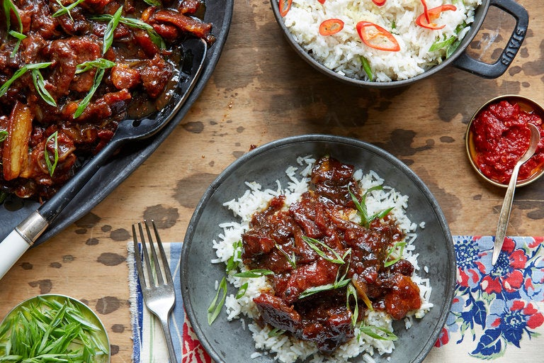

Pork Belly

Description
Thit kho to – a sticky-sweet pork dish with funky undertones of nuoc mam – is often served on Tet Nguyen Dan, the Vietnamese New Year and the nation's most important holiday. This recipe is adapted from Michael Bao Huynh, a chef and restaurateur who came to the United States as a refugee in 1982. Thit kho to is traditionally made with pork belly, but it can also be made with pork shoulder butt (as shown in the photo) – a lighter though no less delicious alternative. Serve the meat over a pile of snowy white rice with a bottle of hot pepper sauce nearby. —Dana Bowen
Ingredients
- 1½ cups sugar
- 2½ pounds pork belly or butt, sliced into thin, inch-long strips
- 1 tablespoon salt
- ½ teaspoon freshly ground black pepper
- ¼ cup fish sauce
- 2 heaping teaspoons minced garlic
- 1 dash sesame oil
- 1 medium Vidalia onion, sliced
- 4 scallions, sliced, green part only
- Rice for serving
Steps
- Cover bottom of a large, heavy skillet with one cup sugar and place over medium low heat. As soon as it melts and turns golden, add pork, raise heat to medium, and stir until coated. (Sugar will become sticky and may harden, but it will re-melt as it cooks, forming a sauce.)
- Stir in remaining sugar, salt, pepper and fish sauce. Cover and cook 2 minutes. Uncover, stir in garlic and oil and lower to simmer to reduce sauce for about 20 minutes.
- Stir in Vidalia onions and cook until translucent, 5 to 7 minutes. Pork should be caramelized; if not, raise heat and sauté while sauce further reduces. Transfer to serving bowl, and sprinkle with scallion greens.